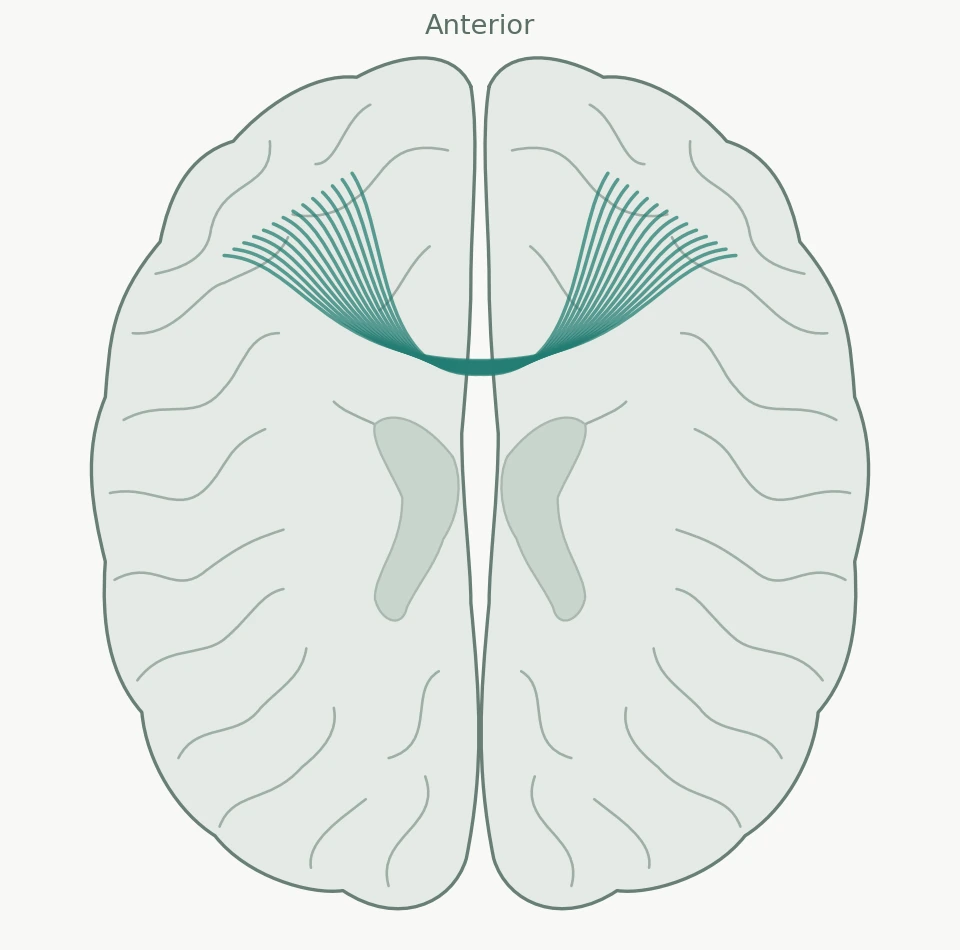

The Lonely Mind: An MRI Investigation of the Effects of Social Isolation on the Brain

Forceps minor- Forceps minor
- Higher radial diffusivity among socially isolated men
- Right orbitofrontal cortex
- Lower T1-weighted to T2-weighted signal ratio among socially isolated men
Motivation
Could a person’s social environment leave a measurable trace in the fibers that connect the frontal lobes? We used MRI and measures of social isolation in older adults to ask where those associations appear. In a related mouse study, I used movement recordings to ask how behavior varies with the social environment.
Prior work
Longitudinal imaging studies have linked social isolation to differences in hippocampal volume and cortical thickness. We examined the forceps minor, a white-matter tract, and the orbitofrontal cortex. These regions let us ask a different question about how water moves through white matter and how tissue signal varies in frontal cortex.
What we delivered
In the poster analysis, socially isolated men had higher radial diffusivity in the forceps minor and a lower T1-weighted to T2-weighted signal ratio in right orbitofrontal cortex. These are preliminary associations with tissue microstructure. For the separate mouse study, I quantified how often animals made particular movements and how they transitioned between them across housing conditions.